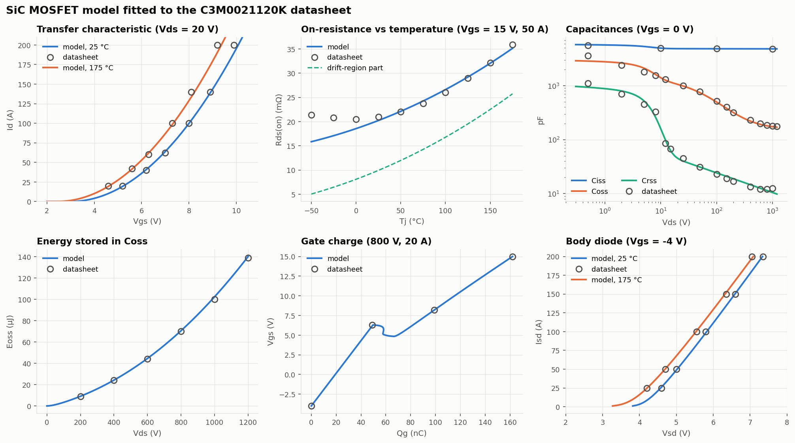
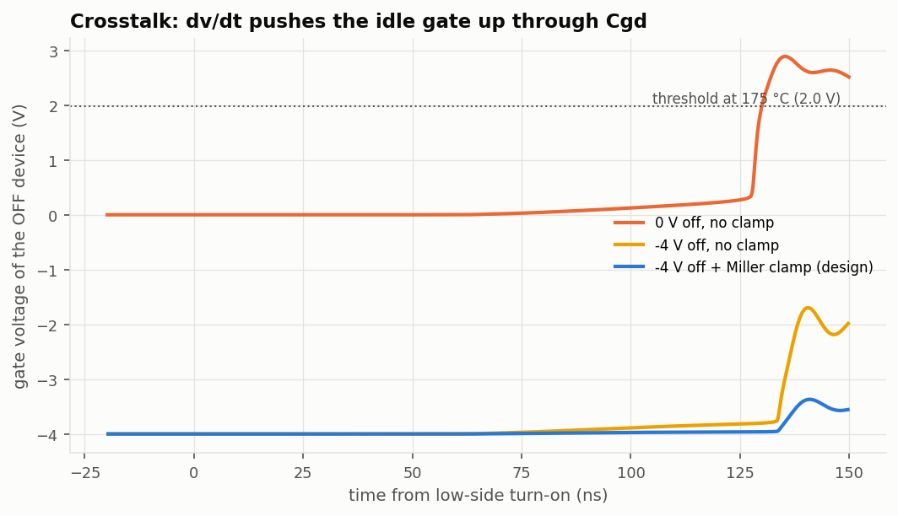
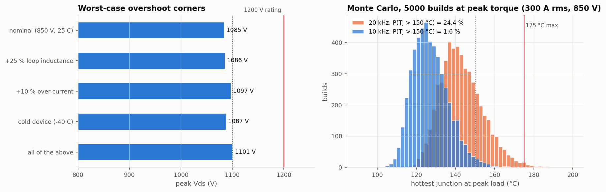
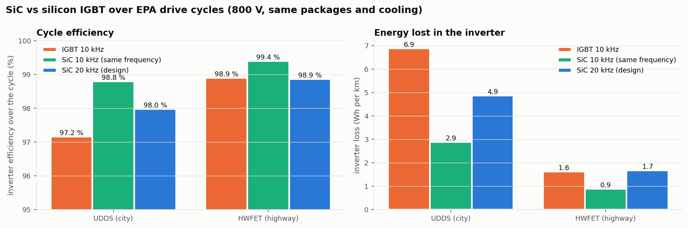

01Overview
A traction inverter turns the battery's DC into three-phase AC for the motor. Each phase is a half-bridge: a high-side and a low-side switch that alternately connect the motor terminal to the + or − rail tens of thousands of times a second. This project designs one switch position; the inverter has six identical ones.
Why 800 V and silicon carbide? For the same power, doubling the voltage halves the current, so cables and motor windings carry a quarter of the I²R loss. But 800 V needs 1200 V-rated switches. Silicon IGBTs at 1200 V switch slowly and have a fixed knee voltage; SiC MOSFETs switch about 10× faster and behave like a plain resistor when on. The project puts numbers on how much that matters.
| Requirement | Value | Why |
|---|---|---|
| Peak phase current | 300 Arms (10 s) | peak motor torque |
| Continuous current | 160 Arms | about 75 kW continuous |
| Coolant | 65 °C water-glycol | typical EV cooling loop |
| Junction temperature | ≤ 150 °C | 25 °C margin to the 175 °C maximum |
| Peak VDS | ≤ 1100 V at the worst corner | margin to the 1200 V rating |
| Turn-on dv/dt | ≤ 50 V/ns | motor insulation and EMI |
02Architecture
The design was done in the order below. Each step feeds the next: the device model sets up the switching bench, the bench produces an energy table, and the energy table drives the loss, thermal and drive-cycle models.
- Fit a SPICE model of the SiC MOSFET to the datasheet curves
- Calibrate a double-pulse test bench, validate on 13 unseen points
- Design studies: gate resistors, layout, crosstalk, paralleling, short circuit
- Electro-thermal loss model and device count, SiC vs IGBT
- EPA drive cycles (UDDS, HWFET)
- Worst-case corners and a 5,000-build Monte Carlo
- KiCad schematic of the gate driver and five paralleled MOSFETs
The device model is an equivalent circuit: a square-law channel, a drift resistance that rises with temperature (R ∝ T2.34), voltage-dependent capacitances, and a PiN body diode. It matches RDS(on) within 2 % from 25 to 175 °C and the total gate charge exactly (162 nC).

03Design decisions
Every value comes from a simulation sweep, not a rule of thumb.
| Question | Decision |
|---|---|
| How many MOSFETs per switch? | Four per switch reach 182 °C at peak current; five reach 134 °C. Five. |
| Gate resistors? | A small turn-off resistor is fast and low-loss but overshoots past 1100 V; turn-on speed is capped by the 50 V/ns dv/dt budget. 6.8 Ω on, 4.7 Ω off. |
| Add a gate-driver booster? | When dv/dt limits turn-on speed, a stronger driver cannot help: the booster version lost (4.7 vs 3.9 mJ per device). UCC21750-Q1 alone. |
| Layout inductance? | With only an 8 nH busbar, staying under the overshoot limit needed a 22 Ω turn-off resistor and about 3× the loss. Local high-frequency capacitors fix it if their loop is ≤ 2.5 nH. 1 µF HF caps, 2 nH loop. |
| Negative gate voltage? | With 0 V off-bias the idle device's gate is kicked to +2.9 V, above its 2.0 V hot threshold: a false turn-on. −4 V plus a Miller clamp holds it at −3.4 V. −4 V + Miller clamp. |
| DESAT blanking capacitor? | 22 pF cleared a short circuit in 2.24 µs worst case; 10 pF in 1.97 µs, inside SiC's ~2 µs withstand time. 10 pF. |
| Switching frequency at peak torque? | At 20 kHz, 24 % of Monte Carlo builds exceed 150 °C; at 10 kHz, 1.6 %. 20 kHz cruising, 10 kHz at peak torque. |

04Testing
The model is checked against data it never saw. The double-pulse bench was calibrated at one operating point and then compared with the datasheet's switching energies on 13 others.
| Check | Result |
|---|---|
| Switching energy vs current (10–80 A) | mean error 3.6 %, worst 5.7 % |
| Switching energy vs temperature (75–125 °C) | mean error 1.8 % |
| Fitted thresholds (never used in the fit) | 2.53 V / 1.98 V vs datasheet 2.5 V / 2.0 V |
| Worst-case turn-off overshoot | 1101 V at 850 V bus, +25 % loop inductance, −40 °C |
| Short circuit | DESAT trips in 0.72 µs typical, fault cleared in 1.97 µs worst case |
| Loss at 75 kW | SiC 402 W (99.47 %) vs Si IGBT 720 W (99.05 %) |
| EPA city cycle (UDDS) | inverter energy loss −58 % vs IGBT at the same 10 kHz |


05What I'd change
- The model is calibrated to datasheet measurements, not my own bench data. A double-pulse test on real hardware is the next step.
- Switching delay times come out 30–50 % longer than the datasheet's even though the energies match, and the model under-predicts the effect of very large gate resistors (up to 24 % at 20 Ω).
- The short-circuit simulation is isothermal, so its fault current is an upper bound.
- There is no PCB layout yet. The 2.5 nH loop-inductance budget is the requirement the layout must meet.